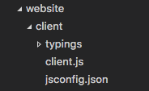

Visual Studio Code provides IntelliSense, debugging, and powerful editor features for JavaScript. VS Code uses the JavaScript language service to make authoring JavaScript easy. In addition to syntactical features like format, format on type and outlining, you also get language service features such as Peek, Go to Definition, Find all References, and Rename Symbol.
IntelliSense
VS Code IntelliSense is intelligent code completion, parameter info, and member lists. VS Code provides IntelliSense using TypeScript type declaration (typings) files (for example, node.d.ts) to provide metadata about the JavaScript based frameworks you are consuming in your application. Type declaration files are written in TypeScript so they can express the data types of parameters and functions, allowing VS Code to provide a rich IntelliSense experience.
Thanks to a feature called Automatic Type Acquisition you as a user do not have to worry about these type declaration file. VS Code will install them automatically for you.
For the details of how JavaScript IntelliSense works, including being based on type inference, JsDoc annotations, TypeScript declarations, and mixing JavaScript and TypeScript projects, see the JavaScript language service documentation.
When type inference does not provide the desired information, type information may be provided explicitly with JSDoc annotations. This document describes the JSDoc annotations currently supported. In addition to objects, methods, and properties, the JavaScript IntelliSense window also provides basic word completion for the symbols in your file.
VS Code ships with the most stable version of the JavaScript language service. The same language service powers both JavaScript and TypeScript, so if you want to use a newer version, you can define the typescript.tsdk setting to point to a directory containing the TypeScript tsserver.js file. See more details here.
Automatic Type Acquisition
VS Code JavaScript IntelliSense for third-party libraries and modules is powered by *.d.ts type declaration (typings) files coming from the npmjs type declaration file repository.
In this image you can see IntelliSense, including the method signature, parameter info, and the method’s documentation, for a popular library called lodash.

Type declaration files are automatically downloaded and managed by Visual Studio Code for packages listed in your project’s package.json.
|
If you are using Visual Studio Code 1.8+, you can alternately explicitly list packages to acquire type declaration files for in your jsconfig.json.
|
Now when you require or import lodash, VS Code will use the automatically downloaded type declaration files for the library to provide rich Intellisense. Most common JavaScript libraries have type declaration files available. You can search for a library’s type declaration file package using the TypeSearch site.
Fixing NPM not installed warning for Automatic Type Acquisition
Automatic Type Acquisition (ATA) uses npm to install and manage Type Declaration (typings) files. To ensure that Automatic Type Acquisition works properly, first ensure that you have npm installed on your machine.
If you have npm installed but still see a warning message, you can explicitly tell VS Code where npm is installed with the "typescript.npm" setting. This should be set to the full path of the npm executable on your machine, and this does not have to match the version of npm you are using to manage packages in your workspace. typescript.npm requires TypeScript 2.3.4+.
JavaScript Project (jsconfig.json)
The presence of a jsconfig.json file in a directory indicates that the directory is the root of a JavaScript project. jsconfig.json specifies the root files and the options for the language features provided by the JavaScript language service. For common setups a jsconfig.json file is not required, however, there are situations when you will want to add a jsconfig.json.
- Not all files should be in your JavaScript project (for example, you want to exclude some files from showing IntelliSense). This situation is common with front-end and back-end code.
- Your workspace contains more than one project context. In this situation, you should add a
jsconfig.jsonfile at the root folder for each project. - You are using the TypeScript compiler to down-level compile JavaScript source code.
Location of jsconfig.json
To define our code as a JavaScript project, create jsconfig.json at the root of your JavaScript code as shown below. A JavaScript project is the source files of the project and should not include the derived or packaged files (such as a dist directory).

In more complex projects, you may have more than one jsconfig.json file defined inside a workspace. You will want to do this so that the source code in one project does not appear in the IntelliSense of another project.
Illustrated below is a project with a client and server folder, showing two separate JavaScript projects:

Writing jsconfig.json
Below is a simple template for jsconfig.json file which defines the JavaScript target to be ES6 and the exclude attribute excludes the node_modules folder. You can copy and paste this code into your jsconfig.json file.
|
The exclude attribute tells the language service which files are and are not part of your source code. If IntelliSense is slow, add folders to your exclude list (VS Code will prompt you to do this if it detects slow completions). You will want to exclude files generated by a build process (such as a dist directory). These files will cause suggestions to show up twice and will slow down IntelliSense.
You can explicitly set the files in your project using the include attribute. If no include attribute is present, then this defaults to including all files in the containing directory and subdirectories. When a include attribute is specified, only those files are included.
Here is an example with an explicit include attribute:
|
The best practice, and least error prone route, is to use the include attribute with a single src folder. Note that the file paths in exclude and include are relative to the location of jsconfig.json.
See here for the full documentation of jsconfig.json.
Note:
jsconfig.jsonis the same as atsconfig.jsonfile, only withallowJSset to true. See the documentation fortsconfig.jsonhere to see other available options.
Debugging
VS Code comes with great debugging support for JavaScript. Set breakpoints, inspect objects, navigate the call stack, and execute code in the Debug Console. See more about debugging here.
Debug Client Side
You can debug your client side code using a browser debugger such as Debugger for Chrome or Debugger for Edge.
Debug Server Side
Debug Node.js in VS Code using the built-in debugger. Setup is easy and you can read a tutorial for Node.js debugging here.
Type Checking and Quick Fixes for JavaScript Files
VS Code allows you to leverage some of TypeScript’s advanced type checking and error reporting functionality in regular JavaScript files. This is a great way to catch common programming mistakes. These type checks also enable some exciting quickfixes for JavaScript, including add missing import and add missing property.

TypeScript can infer types in .js files same as in .ts files. When types cannot be inferred, they can be specified using JSDoc comments. You can read more about how TypeScript uses JSDocs for JavaScript type checking here.
Type checking of JavaScript is optional and opt-in. Existing JavaScript validation tools such as ESLint can be used alongside the new built-in type checking functionality.
You can get started with type checking a few different ways depending on your needs.
Per file
The easiest way to enable type checking in a JavaScript file is by adding // @ts-check to the top of a file.
|
Using // @ts-check is a good approach if you just want to try type checking in a few files but not yet enable it for an entire codebase.
Using a Setting
To enable type checking for all JavaScript files without changing any code, just add "javascript.implicitProjectConfig.checkJs": true to your workspace or user settings. This enables type checking for any JavaScript file that is not part of a jsconfig.json or tsconfig.json project.
You can opt individual files out of type checking with a // @ts-nocheck comment at the top of the file:
|
You can also disable individual errors in a JavaScript file using a // @ts-ignore comment on the line before the error:
|
Using a JSConfig or TSConfig
To enable type checking for JavaScript files that are part of a jsconfig.json or tsconfig.json, simply add "checkJs": true to the project’s compiler options:
jsconfig.json:
|
tsconfig.json:
|
This enables type checking for all JavaScript files in the project. You can use // @ts-nocheck to disable type checking per file.
JavaScript type checking requires TypeScript 2.3. If you are unsure what version of TypeScript is currently active in your workspace, simply run the TypeScript: Select TypeScript Version command to check.
Global Variables and Type Checking
Let’s say that you are working in legacy JavaScript code that uses global variables or non-standard DOM APIs:
|
If you try to use // @ts-check with the above code, you’ll see a number of errors about the use of global variables:
Line 2-Property 'webkitNotifications' does not exist on type 'Window'.Line 2-Cannot find name 'CAN_NOTIFY'.Line 3-Property 'webkitNotifications' does not exist on type 'Window'.
If you want to continue using // @ts-check but are confident that these are not actual issues with your application, you have to let TypeScript know about these global variables.
To start, create a jsconfig.json at the root of your project:
|
Then reload VS Code to make sure the change is applied. The presence of a jsconfig.json lets TypeScript know that your Javascript files are part of a larger project.
Now create a globals.d.ts file somewhere your workspace:
|
d.ts files are type declarations. In this case, globals.d.ts lets TypeScript know that a global CAN_NOTIFY exists and that a webkitNotifications property exists on window. You can read more about writing d.ts here. d.ts files do not change how JavaScript is evaluated, they are used only for providing better JavaScript language support.
Linters
A linter is a tool that provides warnings for suspicious looking code. VS Code supports linters through extensions. Linters provide warnings, errors, and light bulb actions.
VS Code provides support for JavaScript linters, including ESLint, JSHint and StandardJS. If enabled, the JavaScript code is validated as you type and you can navigate to reported problems and fix them inside VS Code.

Tip: In the above example, the error comes from
eslint. Error messages will be prefixed (see above[eslint]) by the originator of the message. Error messages from the JavaScript language service are prefixedjs.Tip You can disable default JavaScript validation by setting
"javascript.validate.enable": falsein your settings.
Tip: This list is dynamically queried from the VS Code Marketplace. Read the description and reviews to decide if the extension is right for you.
A linter extension may require an external tool. The steps below show how to setup ESLint. The process is similar for other linters.
- Install the linter globally or inside the workspace folder that contains the JavaScript code to be validated. For example, using
npm install -g eslint. - Install the ESLint extension.
- Create a
.eslintrc.jsonfile in the root of your workspace to configure the linter. You can useeslint --initto create an initial version of the.eslintrc.jsonfile.
Tip: You get IntelliSense and hovering inside the
.eslintrc.jsonfile.Tip: The linter is enabled after installation. You can disable a linter with the corresponding
.enablesetting. For ESLint, this would be setting"eslint.enable" : false.
It is recommended that you enable the linter rules that warn about undefined and unused variables. To do this, put the following options in your .eslintrc.json file.
|
You can also control when a linter runs with the linter .run setting. The two options are the default onType after each key stroke and onSave after you save your file.
Here are a few useful resources when using ESLint.
Snippets
VS Code has several built-in snippets that will come up as you type or you can press ⌃Space (Windows, Linux Ctrl+Space) (Trigger Suggest) and you will see a context specific list of suggestions.
Tip: You can add in your own snippets for JavaScript. See User Defined Snippets to find out how.
You may not want to show snippets. You can disable them by setting editor.snippetSuggestions to "none" in your settings file. If you’d like to see snippets, you can specify the order relative to suggestions; at the top ("top"), at the bottom ("bottom"), or inlined ordered alphabetically ("inline"). The default is "inline".
You can enable tab completions with editor.tabCompletion setting. After typing the prefix of a snippet, press Tab to insert it.
Use Next Generation JavaScript
Run Babel inside VS Code
The Babel transpiler turns ES6 files into readable ES5 JavaScript with Source Maps. You can easily integrate Babel into your workflow by adding the configuration below to your tasks.json file (located under the workspace’s .vscode folder). The isBuildCommand switch makes this task the Task: Run Build Task gesture. isBackground tells VS Code to keep running this task in the background. To learn more, go to Tasks.
|
Once you have added this, you can start Babel with the ‚áß‚åòB (Windows, Linux Ctrl+Shift+B) (Run Build Task) command and it will compile all files from the src directory into the lib directory.
Tip: For help with Babel CLI see the instructions here. The example above uses the CLI option.
Use the TypeScript Compiler
One of the key features TypeScript provides is the ability to use the latest JavaScript language features, and emit code that can execute in JavaScript runtimes that don’t yet understand those newer features. With JavaScript using the same language service, it too can now take advantage of this same feature.
The TypeScript compiler tsc can down-level compile JavaScript files from ES6 to another language level. Configure the jsconfig.json with the desired options and then use the –p argument to make tsc use your jsconfig.json file, e.g. tsc -p jsconfig.json to down-level compile.
Read more about the compiler options for down level compilation here.
Formatting
As with other languages, you can format your JavaScript code in VS Code.

VS Code provides several formatting settings for JavaScript. They can all be found in the javascript.format settings namespace.
|
Popular Extensions
VS Code ships with excellent support for JavaScript but you can additionally install debuggers, snippets, linters, and other JavaScript tools through extensions.
Tip: The extensions shown above are dynamically queried. Click on an extension tile above to read the description and reviews to decide which extension is best for you. See more in the Marketplace.
Next Steps
Read on to find out about:
- jsconfig.json - Detailed description of the
jsconfig.jsonproject file. - IntelliSense - Learn more about IntelliSense and how to use it effectively for your language.
- Debugging - Learn how to set up debugging for your application.
- Node.js - A walkthrough to create an Express Node.js application.
- TypeScript - VS Code has great support for TypeScript which brings structure and strong typing to your JavaScript code.
Watch these introductory videos:
- Quick Tour using JavaScript - See a three-minute overview of using JavaScript in VS Code.
- IntelliSense - Tutorial on IntelliSense with JavaScript.
- Debugging - Learn how to debug a Node.js application.
Common Questions
Q: Does VS Code support JSX and React Native?
A: VS Code supports JSX and React Native. You will get IntelliSense for React/JSX and React Native from automatically downloaded type declaration (typings) files from the npmjs type declaration file repository. Additionally, you can install the popular React Native extension from the Marketplace.
React Native examples often use the experimental Object Rest/Spread operator. This is not yet supported by VS Code. If you want to use it, it is recommended that you disable the built-in syntax checking (see below).
To enable ES6 import statements for React Native, you need to set the allowSyntheticDefaultImports compiler option to true. This tells the compiler to create synthetic default members and you get IntelliSense. React Native uses Babel behind the scenes to create the proper run-time code with default members. If you also want to do debugging of React Native code then you can install the React Native Extension.
Q: IntelliSense is not working for external libraries.
A: Automatic Type Acquisition works for dependencies downloaded by npm (specified in package.json), Bower (specified in bower.json), and for many of the most common libraries listed in your folder structure (i.e. jquery-3.1.1.min.js).
ES6 Style imports are not working.
When you want to use ES6 style imports but some type declaration (typings) files do not yet use ES6 style exports, then set the TypeScript compiler option allowSyntheticDefaultImports to true.
|
Q: Can I debug minified/uglified JavaScript?
A: Yes, you can. You can see this working using JavaScript source maps in the Node.js Debugging topic.
Q: How do I disable Syntax Validation when using non ES6 constructs?
A: Some users want to use syntax constructs like the proposed Object Rest/Spread Properties. However, these are currently not supported by VS Code’s JavaScript language service and are flagged as errors. For users who still want to use these future features, we provide the javascript.validate.enable setting.
With javascript.validate.enable: false, you disable all built-in syntax checking. If you do this, we recommend that you use a linter like ESLint to validate your source code. Since VS Code’s JavaScript support doesn’t understand ES7 constructs, features like IntelliSense might not be fully accurate.